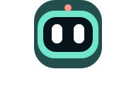

机器人桌搭
白色眼睛，清晰的表情节奏；彩色桌面，充分利用胶囊屏。
在屏幕上滑动，或按方向键；点击眼睛换一个表情。
十四种表情 · 点击单独预览
取消中央安全区限制，按照实际胶囊轮廓排布文字和两端按钮。眼睛位置固定，眨眼、比心和流泪通过重复节奏表达。预览复用设备的图形资源、动作数据和插值函数，但浏览器流畅度不代表手环表现。左右、上下切屏使用 420ms 滑动与淡入淡出。
设置按钮仅作演示。调研与验证说明

白色眼睛，清晰的表情节奏；彩色桌面，充分利用胶囊屏。
在屏幕上滑动，或按方向键；点击眼睛换一个表情。
取消中央安全区限制，按照实际胶囊轮廓排布文字和两端按钮。眼睛位置固定，眨眼、比心和流泪通过重复节奏表达。预览复用设备的图形资源、动作数据和插值函数，但浏览器流畅度不代表手环表现。左右、上下切屏使用 420ms 滑动与淡入淡出。
设置按钮仅作演示。调研与验证说明